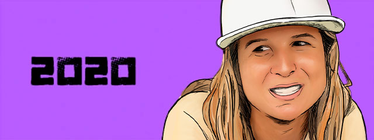
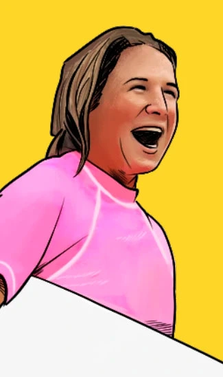

sumérgete con sofi
reina del surf peruano
Sofía mulanovich, La primera peruana en lograr un título mundial de surf merece su propio especial, 20 años después estas son sus historias.
-


2024
-

2021
-

2004
-


1997
-

1992
test 2024
test 2020
reina y campeona
2004

el título mundial
"Me despertaba cada día pensando que sería el día más importante de mi vida, y no lo era".
"Escuchaba una canción que decía que las oportunidades era una vez en la vida".
Fueron doce días de tensa espera en Hawái para Sofía y el Perú para definir su título. En todos esos días ni siquiera podía meterse al mar por seguridad, así que el tenis y la buena comida fueron sus distracciones.
“Al día siguiente me desperté y vi la Copa a mi costado y dije “¡Wow! ¿Qué hace esto acá?” Estaba como en shock.”
Superó la primera ronda sobre la hora, en la última ola, y con llegar a la final, se consagró campeona. Con 21 años, era en ese momento la más joven el lograrlo, además de ser la primera latina en llegar a lo más alto.
Estuvo rodeada de las chicas del circuito, porque sus amigas del colegio que viajaron no pudieron esperar tanto y al octavo día regresaron a Lima. Su familia lo vivió a la distancia:
“Preferí las cosas más calmadas, más estar conmigo misma y mis espacios”.

“Empecé el año ganando el Mundial ISA en Ecuador y eso me dio mucha confianza. Luego gané mi primer CT en Tavarua (Fiji), en Tahití también lo gané y fue a Francia e hice tres al hilo que me pusieron primera en el ránking”.
Fue el sábado 20 de noviembre del 2024, en Haleiwa (Oahu) en el que de las olas hawaianas salió una reina con la bandera peruana por todo lo alto y ahí estuvo El Comercio con su fotógrafo Renzo Giraldo para no perderse ningún detalle.

Fue un cierre de año hermoso para el Perú. ‘Maju’ Mantilla había sido elegida Miss Universo, Perú le había ganado a Chile por las Eliminatorias, Ramón Ferreyros destacaba en el Mundial de Rally y Akio Tamashiro ganaba la medalla de plata en el Mundial de Karate.
Hoy, el trofeo de campeona adorna la parte más alta del estante de premios. Ahí, junto a una foto de sus pequeños hijos y la portada de la Revista Surfer (junto a Andy Irons, Dane Reynolds y Kelly Slater), la inmensa copa brilla con el nombre Sofía Mulanovich grabado para siempre, en solo en su placa, en la historia misma.
Selecciona una Sofi
test 1997
test 1992